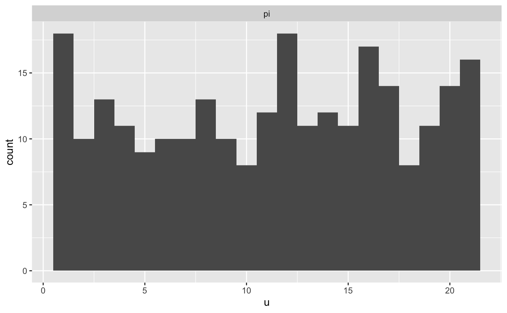
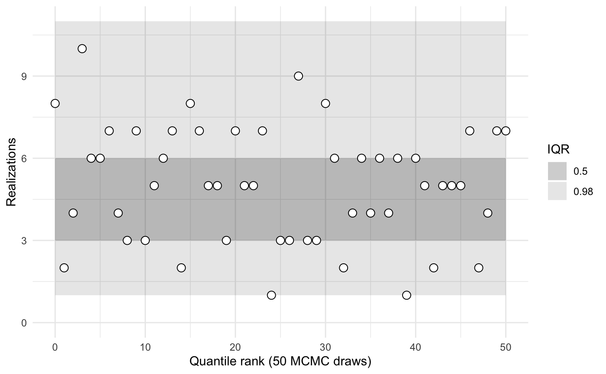
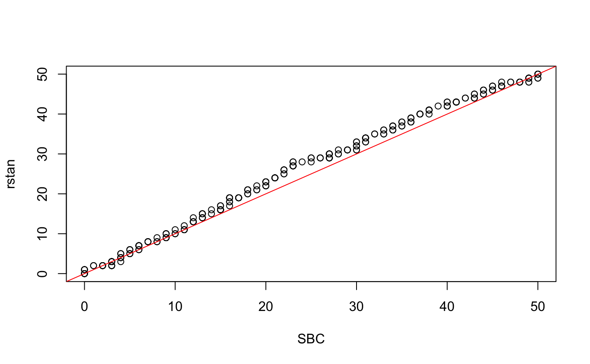

vignettes/comparison-to-rstan-sbc.Rmd
comparison-to-rstan-sbc.Rmdlibrary(sbcrs)
library(rstan)
#> Loading required package: StanHeaders
#> Loading required package: ggplot2
#> rstan (Version 2.19.2, GitRev: 2e1f913d3ca3)
#> For execution on a local, multicore CPU with excess RAM we recommend calling
#> options(mc.cores = parallel::detectCores()).
#> To avoid recompilation of unchanged Stan programs, we recommend calling
#> rstan_options(auto_write = TRUE)We will compare the ranks calculated using the SBC package against those calculated by the rstan::sbc() function.
The stan code for this model is based on the help text for rstan::sbc. The following model is given as an example:
data {
int<lower = 1> N;
real<lower = 0> a;
real<lower = 0> b;
}
transformed data { // these adhere to the conventions above
real pi_ = beta_rng(a, b);
int y = binomial_rng(N, pi_);
}
parameters {
real<lower = 0, upper = 1> pi;
}
model {
target += beta_lpdf(pi | a, b);
target += binomial_lpmf(y | N, pi);
}
generated quantities { // these adhere to the conventions above
int y_ = y;
vector[1] pars_;
int ranks_[1] = {pi > pi_};
vector[N] log_lik;
pars_[1] = pi_;
for (n in 1:y) log_lik[n] = bernoulli_lpmf(1 | pi);
for (n in (y + 1):N) log_lik[n] = bernoulli_lpmf(0 | pi);
}Compile this Stan model:
sbc_rstan_model <- stan_model(file = system.file('stan', 'rstan_sbc_example.stan', package = 'sbcrs'))Calibration involves generating data and parameters, and sampling from a Stan model many times. To speed up this process, take advantage of all of your machine’s cores.
doParallel::registerDoParallel(cores = parallel::detectCores())
options(mc.cores = parallel::detectCores())Calibrate using rstan::sbc().
calibration_data <- list(N = 10, a = 2, b = 2)
rstan_sbc <- rstan::sbc(sbc_rstan_model, data = calibration_data, 256)
plot(rstan_sbc, binwidth = 1, thin = 50)
The Stan code used in the above example has been modified from the original. In the modified version, y is generated in the transformed data block of the Stan file. The original model would have looked like this:
data {
int<lower = 1> N;
real<lower = 0> a;
real<lower = 0> b;
int<lower = 0, upper = N> y;
}
parameters {
real<lower = 0, upper = 1> pi;
}
model {
target += beta_lpdf(pi | a, b);
target += binomial_lpmf(y | N, pi);
}
generated quantities {
real pi_ = beta_rng(a, b);
vector[N] log_lik;
for (n in 1:y) log_lik[n] = bernoulli_lpmf(1 | pi);
for (n in (y + 1):N) log_lik[n] = bernoulli_lpmf(0 | pi);
}Compile this Stan model:
sbc_original_model <- stan_model(file = system.file('stan', 'rstan_sbc_example_original.stan', package = 'sbcrs'))Create an SBC object that corresponds with the original model.
sbc <- SBC$new(
data = function(seed) {
calibration_data
},
params = function(seed, data) {
set.seed(seed + 1e6)
list(pi = rbeta(1, data$a, data$b))
},
modeled_data = function(seed, data, params) {
set.seed(seed + 2e6)
list(y = rbinom(1, data$N, params$pi))
},
sampling = function(seed, data, params, modeled_data, iters) {
sampling(sbc_original_model, data = c(data, modeled_data), seed = seed,
chains = 1, iter = 2 * iters, warmup = iters)
})
Assess whether the distributions of recovered ranks are similar
library(purrr)
x <-
map(sbc$calibrations, 'ranks') %>%
flatten() %>%
unlist() %>%
unname()
y <-
rstan_sbc$ranks %>%
map(~.x[seq(1, 1000, by = 20), ]) %>%
map(~sum(.x)) %>%
unlist()
qqplot(x, y, xlab = 'SBC', ylab = 'rstan')
abline(a = 0, b = 1, col = 'red')